前言
在讲解模糊PID之前，我们先来了解一下什么是PID
PID控制器作为一个比较古老的控制方式，但由于其经典稳定的发挥，在如今也有相当一部分的应用场景，同样也延伸出了相当多的一部分基于PID的改良版控制器
先从字面意思理解一下PID控制器：
- P就是比例，是输入偏差成算的系数
- I就是积分，就是对输入偏差进行积分运算
- D就是微分，对输入偏差进行微分运算
这就是PID的简单含义，就是比例、积分和微分控制的简称，当然在实际工业场景中，也有PI控制和PD控制，PID系统是根据被控系统的输入与输出的比较误差，通过对误差的比例、积分、微分计算出控制量进行控制的
这里放一下传统PID控制器的图：
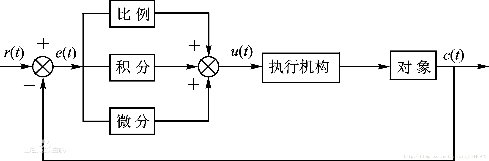
其公式可以总结为：
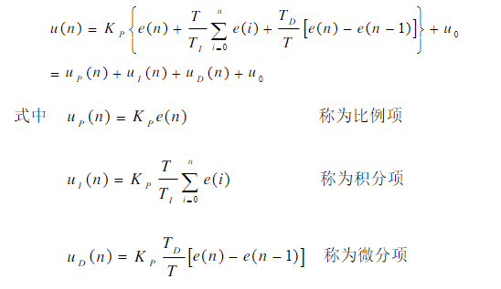
常用控制方式：
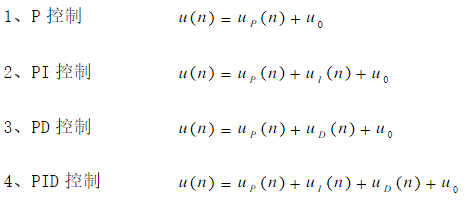
除此之外，PID控制器在大的方面可以分为位置式和增量式，以上两种控制方式这里就不多介绍了，两种控制方式在一定的条件下其实可以相互转化的
下面，就让我们来通过一个例子来了解PID的运作方式：
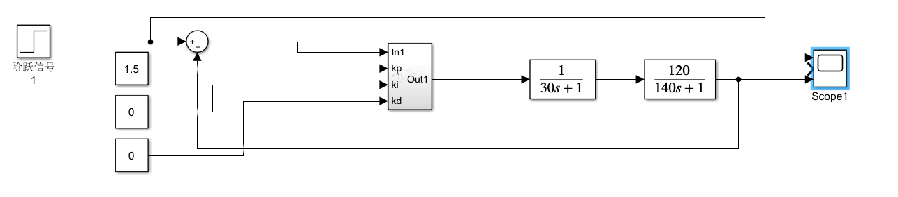
在上面这个simulink仿真中，我们选取了一个阶跃信号作为期望，反馈为我们的输出信号，对其进行求差，输入我们PID的输入，选取1.5作为P输入，将所求出结果输入传递函数之中，经由传递函数输出到示波器上来查看我们的PID输出波形曲线
传递函数：描述线性系统动态特性的基本数学工具之一，虽然有其部分局限性（不能完全的描述系统的真实状态）但在这里，我们只需要传递函数就够了，通俗的理解就是一个系统总结出来的模型，比如说一个控制电机的系统，我们可以通过对其输入和输出量进行拉氏变换或z变换，然后用输出量变换后的结果比上输入量变换的结果，最终就能得到我们的传递函数
现在我们来看一下我们的PID波形曲线：
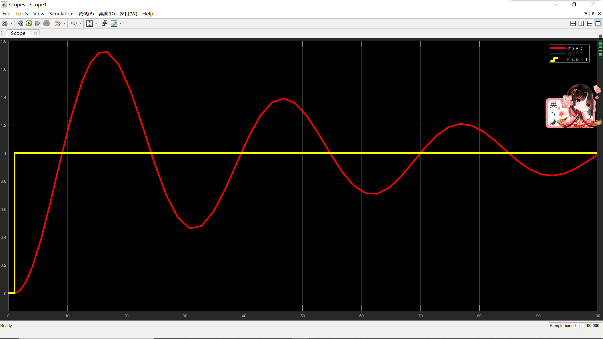
可以看到的是，我们的PID曲线十分的震荡，要经过很久才能稳定下来，但有个好消息是，我们的PID中值始终落在期望1上，接下来我们调整一下D，让D=9.5

可以看到我们的PID曲线已经十分平稳，但是有一个问题，我们将Y轴放大一下
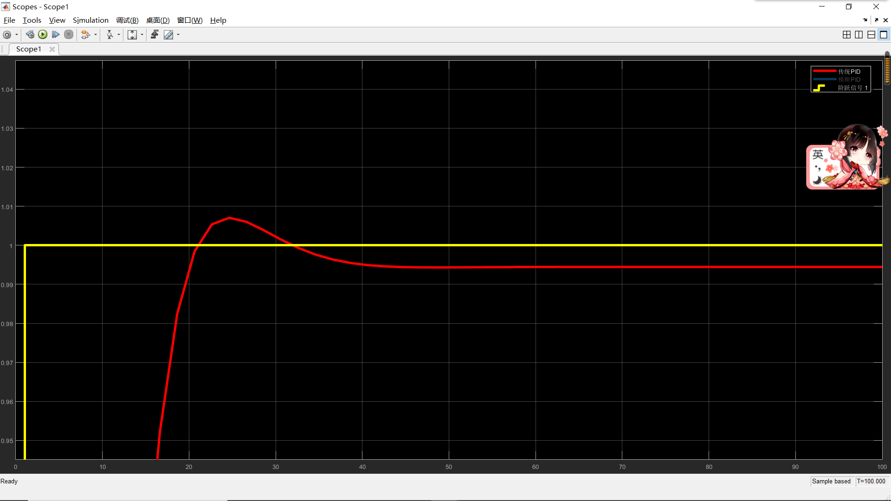
可以看到，最后平稳的曲线并没有真正的追上期望，所以在此我们调整一下I，I=0.001165
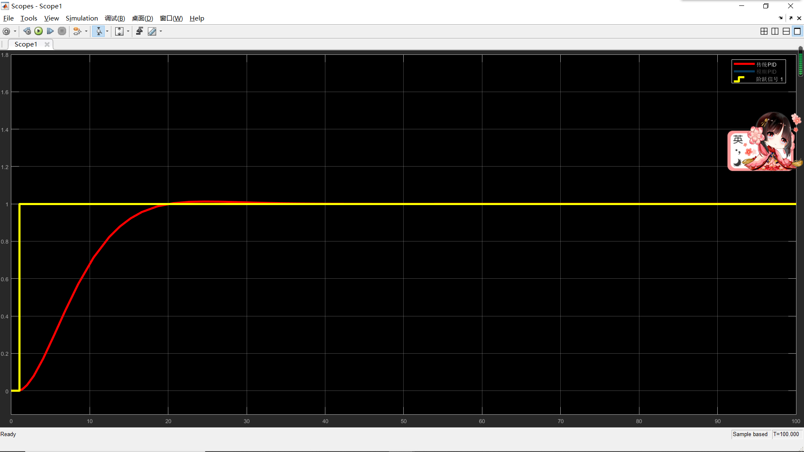
我们来放大看一下：
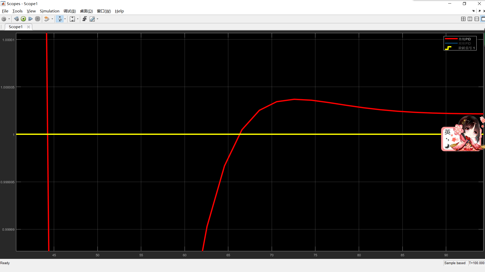
误差已经被缩小到零后六位，当然这是在模拟情况下的，如果在实际中并不用将误差缩到这么小
好了，至此我们来总结一下PID三个参数的效果：
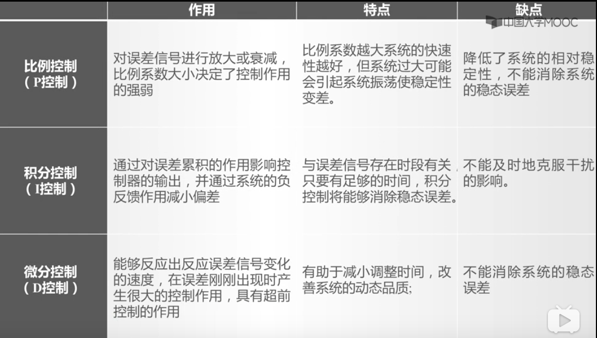
这只是我们这个期望下的结果，让我们调大一下期望值：
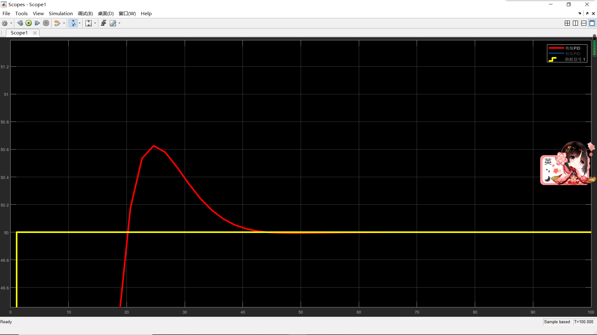
可以看到初始超调值已经从之前的0.1到了现在的0.6，而我们的静态误差从零后六位降到了零后三位，让我们来继续调大一下期望值
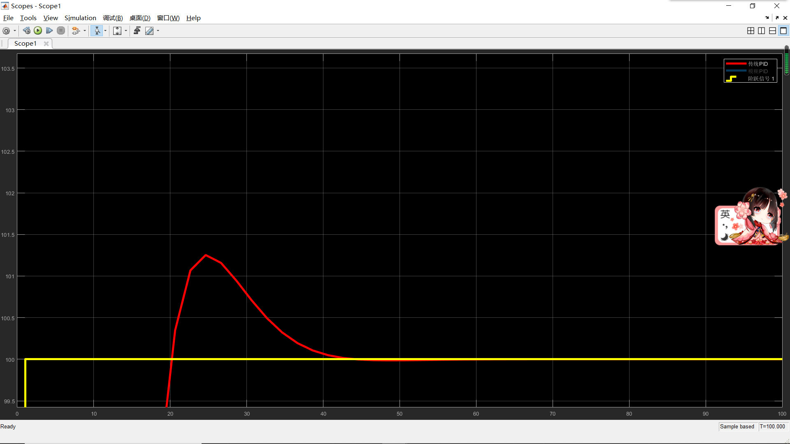
这时初始超调值已经上升到个位数了，这还只是在一个模拟的系统之中，系统不存在干扰和误差，如果我们加入干扰和误差，那么就不会取得现在这样的效果了
PID控制的核心技术就是如何整定出PID控制器的三个最优参数，使得PID控制达到所期望的控制效果，另外需要解决的问题就是在面对复杂多变的非线性系统时，PID控制器如何能够实时在线整定控制器的三个特征参数，以适应动态变化的控制环境，这就是PID参数整定和自整定的问题，随着智能控制技术的发展和先进算法研究的深入，多种先进算法被应用于PID控制器，现有智能PID控制器的研究主要有专家系统型PID控制器、模糊PID控制器、神经网络PID控制器和基于遗传算法以及基于蚁群算法的PID控制器等等。PID控制器在实践中不断得到改进，这里我们就开始了解其中一种——模糊PID
下面我们就进入正题
1.模糊PID的原理
模糊PID控制，利用模糊逻辑并根据一定模糊规则对PID的参数进行实时的优化，以克服传统PID参数无法实时调整PID参数的缺点。模糊PID控制包括模糊化，确定模糊规则，解模糊等组成部分
以小车举例，如何让他能够按照预定轨道正确行驶呢？
先确定当前轨道距离预定轨道的偏差E以及当前偏差和上次偏差变化EC，根据模糊规则进行模糊推理，最后对模糊参数进行解模糊，输出相应的PID参数
老规矩先放个控制器的图：
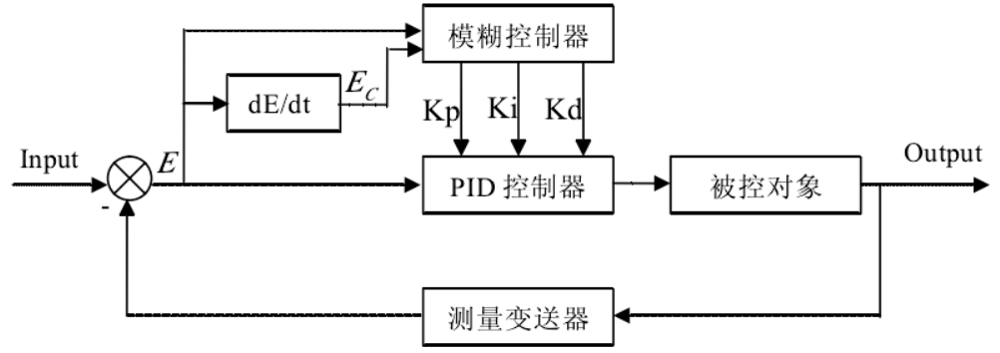
2.模糊化
模糊控制的输入依然是我们熟悉的error(t)与error(t-1),步骤可分为模糊化、模糊推理、解模糊三个步骤，现在我们将从模糊化说起
模糊化是模糊算法非常重要的一步，首先确定对应各语言变量的模糊子集，然后根据量化的结果，我们就可以判断该输入所属的集合并计算出对应的隶属度。计算隶属度的方法有很多，最常用的是使用三角形隶属度函数或梯形隶属度函数等来计算获得
建立论域：
例如：{-6,-5,-4,-3,-2,-1,0,1,2,3,4,5,6}
将所的变量量化一下：

确定隶属度函数，这里取三角隶属度函数，例如这样：
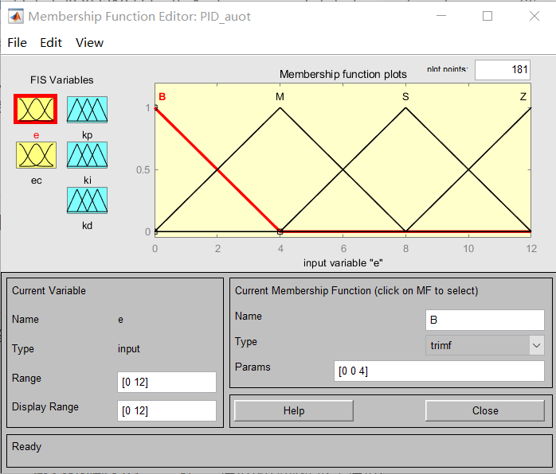
2.模糊规则
根据采集回来的E和EC我们可以推理出他们各自所占据的隶属度，此时我们可以根据模糊规则表去找出输出值所对应的隶属度，这里放个模糊规则表的图：
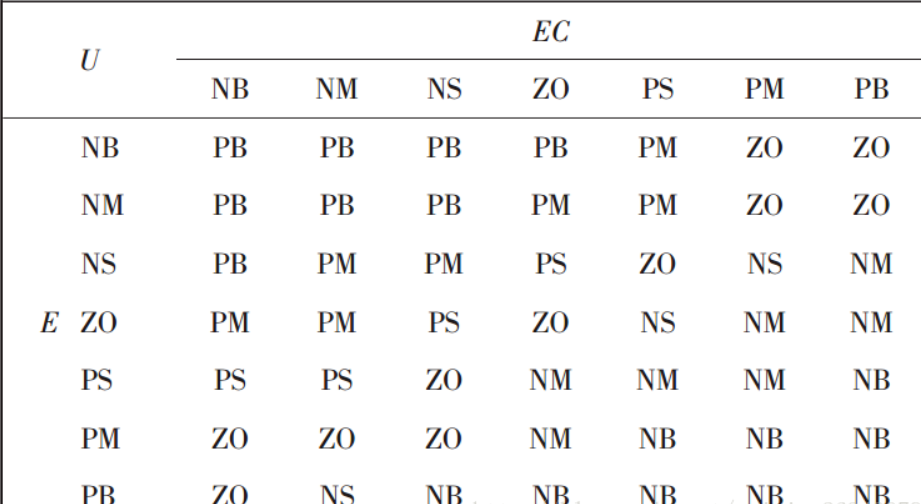
这个表我们可以自己定制，表中的词也可以自行替换，其中U带入PID三个变量即可获得其对应的模糊规则表
当然在实际应用中，PID三个表的其中对应规则需要做不同的修改，这里就简单的提一下：
- Kp模糊规则：依据PID的调试经验我们可以知道，在PID控制器中，Kp值的选取决定于系统的响应速度。增大Kp能提高响应速度，减小稳态偏差；但是，Kp值过大会产生较大的超调，甚至使系统不稳定减小Kp可以减小超调，提高稳定性，但Kp过小会减慢响应速度，延长调节时间。因此，调节初期应适当取较大的Kp值以提高响应速度，而在调节中期，Kp则取较小值，以使系统具有较小的超调并保证一定的响应速度；而在调节过程后期再将Kp值调到较大值来减小静差，提高控制精度，我们对上面那张模糊规则表不用做过多的修改，只需要将PB整体左上移动一个单位，NB同理右下一个单位，空余部分用PM，PS和NM，NS填充
- Ki模糊规则：在系统控制中，积分控制主要是用来消除系统的稳态偏差。由于某些原因(如饱和非线性等)，积分过程有可能在调节过程的初期产生积分饱和，从而引起调节过程的较大超调。因此，在调节过程的初期，为防止积分饱和，其积分作用应当弱一些，甚至可以取零；而在调节中期，为了避免影响稳定性，其积分作用应该比较适中；最后在过程的后期，则应增强积分作用，以减小调节静差，我们只需要将模糊规则表关于ZO做一个镜像翻转，将其中内容填入即可，例左上第一个，与右下第一个互换
- Kd模糊规则：微分环节的调整主要是针对大惯性过程引入的，微分环节系数的作用在于改变系统的动态特性。系统的微分环节系数能反映信号变化的趋势，并能在偏差信号变化太大之前，在系统中引入一个有效的早期修正信号，从而加快响应速度，减少调整时间，消除振荡．最终改变系统的动态性能。因此，Kd值的选取对调节动态特性影响很大。Kd值过大，调节过程制动就会超前，致使调节时间过长；Kd值过小，调节过程制动就会落后，从而导致超调增加。根据实际过程经验，在调节初期，应加大微分作用，这样可得到较小甚至避免超调；而在中期，由于调节特性对Kd值的变化比较敏感，因此，Kd值应适当小一些并应保持固定不变；然后在调节后期，Kd值应减小，以减小被控过程的制动作用，进而补偿在调节过程初期由于Kd值较大所造成的调节过程的时间延长，Kd的模糊规则表调整起来不是很容易，所以可以根据自身系统进行微调即可
3.解模糊化
就以上述模糊规则表来解释
当E正好落在PM上，EC正好落在NB上之后，那么我们解模糊化输出的便是ZO
但一般情况下是EC落在NB-NM之间，E落在PM-PB之间，那么我们不妨假设EC属于NB的隶属度为a（a<1）那么，EC属于NM的隶属度就是1-a，同理可得，E属于PM的隶属度为b（b<1），属于PB的隶属度为1-b
那么NB与PM所对应的ZO隶属度就为a*b，其余三个分别为：
- NB-PB——ZO为a*(1-b)
- NM-PM——ZO为b*(1-b)
- NM-PB——NS为(1-a)*(1-b)
总得隶属度加起来刚好是1
这里我们使用如下公式便可算出：

其中M为隶属度，F为模糊化值
当然，如果我们使用的是量化值，我们还需要将其转化为实际值，这里我们用如下公式来算：
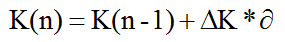
其中∆K为我们所计算得到的值，而α为系数， 通过该公式可分别求出KP，KI，KD
4.仿真
- 第一步，打开matlab输入fuzzy
- 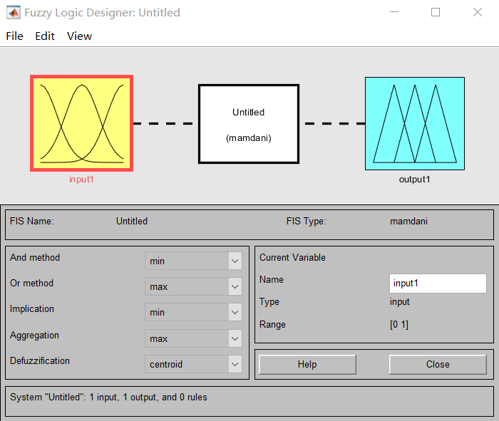
- 在上面那个弹出窗口里点开Edit-Rules，输入四乘四简化版模糊规则
- 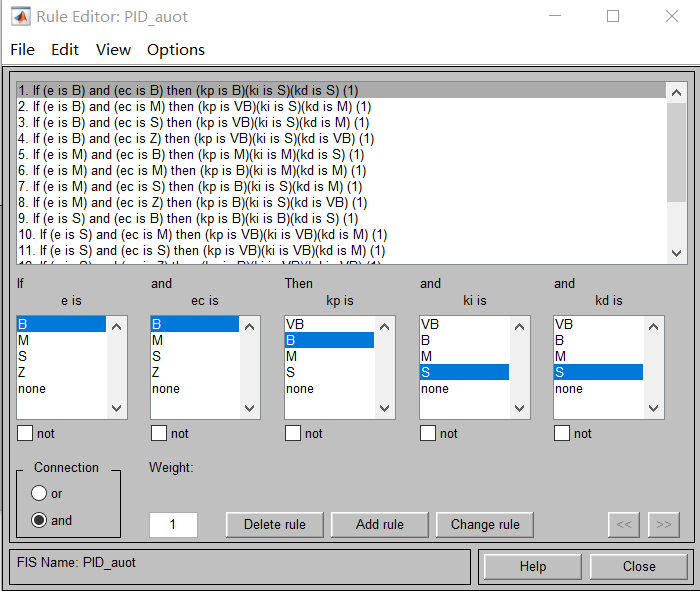
- 打开Edit，选择Add Variable…添加输入输出变量
- 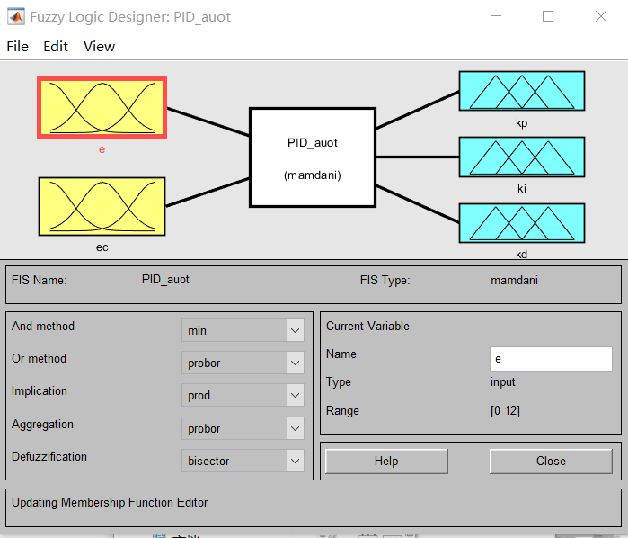
- 双击e修改其值Range与Params，这里改成你设定的论域，同理也修改ec、kp、ki、kd
- 这里我只建立了简化版的模糊规则，并没有细分
- 建立完成确认无误后，点击File-Export-to workspace..
- 将这个导入工作区之后，建立simulink模型
- 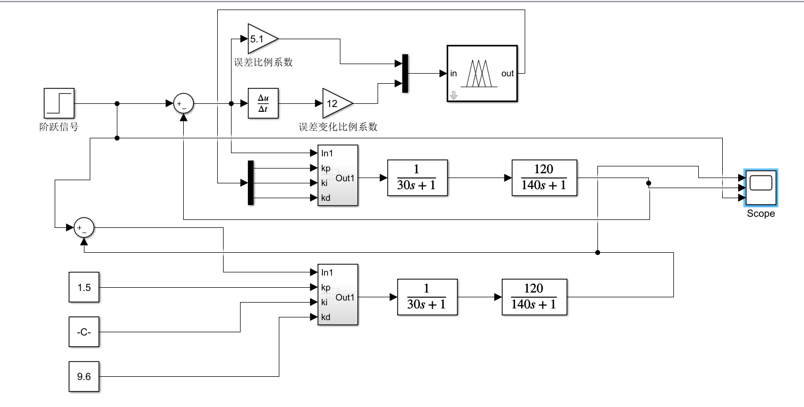
- 其中调整图中蓝色部分，改为自己fuzzy文件的名字
- 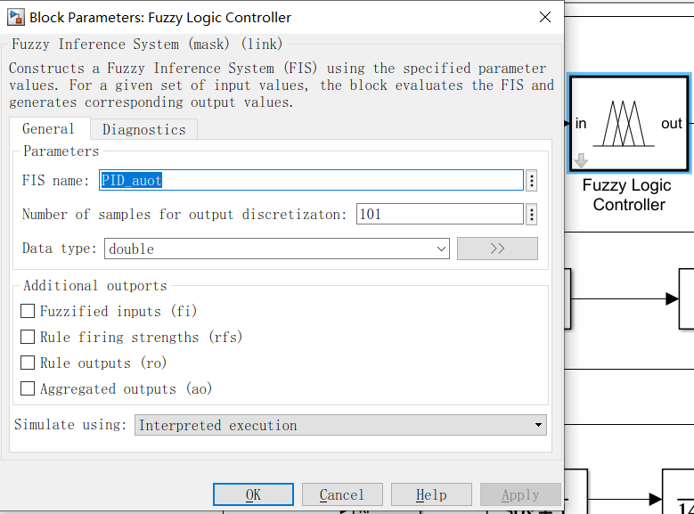
- 运行查看结果：
- 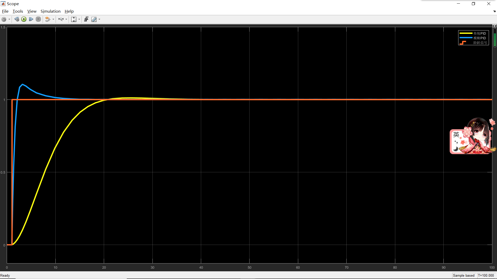
- 图中蓝线为模糊PID的值，黄线为普通PID的值，当然这里模糊PID的值已经是我调试过的，调试方法大致与普通PID有相似之处，不过我并不建议大伙像我一样经验调参，最好是有合理的计算和分析步骤
- 现在我们来改变一下阶跃信号的值，也就是我们的期望
- 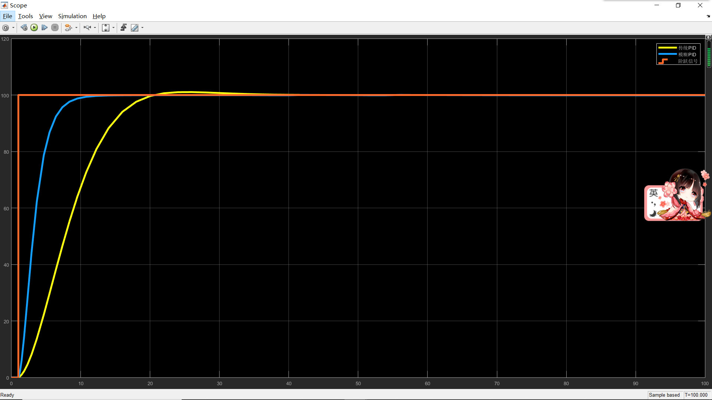
- 虽然当期望是一的时候我们的超调现象十分明显，但当期望变为100的时候，曲线已经很平稳了，而且无论是期望1还是期望100，模糊PID的响应都要优于普通PID
- 当然除此之外，我们还可以通过一些别的方式来看我们所写的模糊PID
- 打开View-Rules，在这个图中我们可以通过拖动左边两条红色的细线来查看不同的输出结果，以此达到直观的了解
- 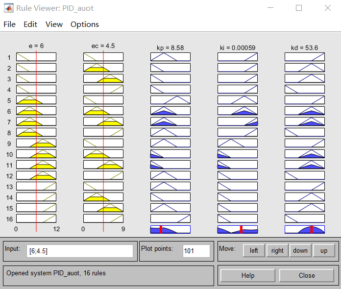
- 打开View-Surface，我们可以得到一个基本曲面图

至此，本次仿真结束，喜欢的话可以收藏本站